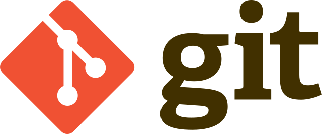
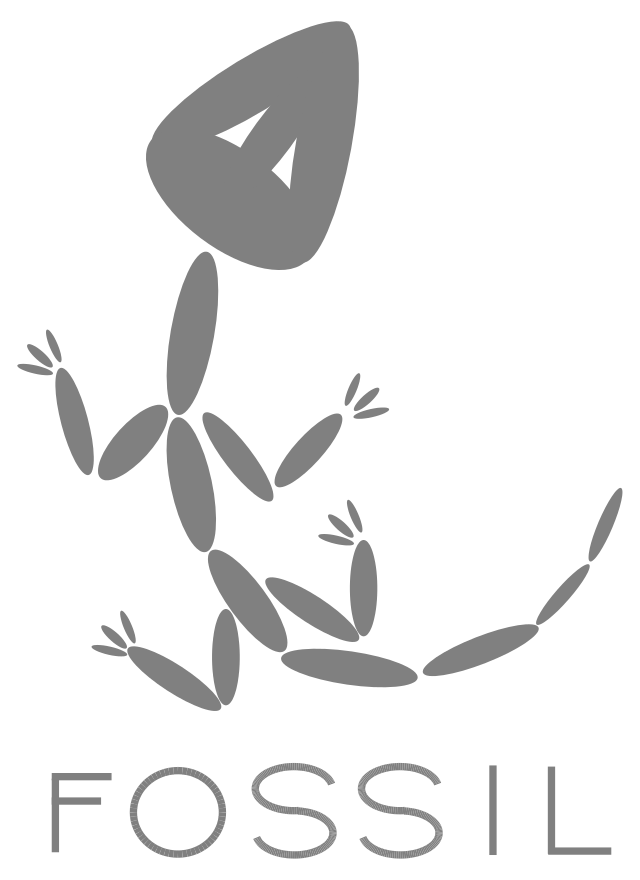
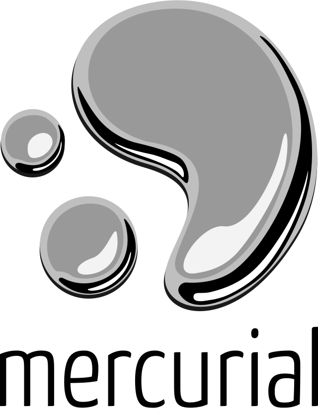

| Software | Fecha de lanzamiento | Creador(es) | última versión estable | Lenguaje en que está desarrollado | Modelo de desarrollo |
|
Git

|
Abril del 2005 | Linus Torvalds | 2.42.0 (2023-08-30) | Python, C, Perl, C++ | Software de código abierto |
|
Fossil

|
Julio del 2006 | D. Richard Hipp | 2.22 (2023-05-31) | C, SQL | Software de código abierto |
|
Mercurial SCM

|
Abril del 2005 | Matt Mackall | 6.5 (20236-07-06) | Python, C, Rust | Software de código abierto |